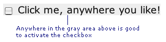
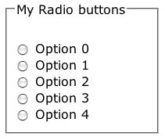
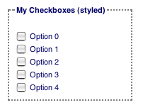
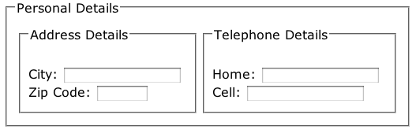
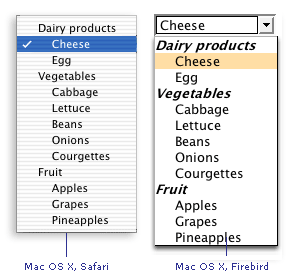

Accessible HTML/XHTML Forms: Intermediate Level
Introduction
The beginner section covered the basics
of layout and positioning of form elements in your web page to improve the accessibility
of your forms. In this section we’ll look at some specific elements that you
can add to your forms that will go even further in insuring that your pages
are usable and accessible by the widest possible audience.
Stick a Label On It that says ‘I Am Accessible!’
Without doubt, one of the most useful tags you can use to make a form more
accessible is the <label> tag. In the beginner section we
detailed how some screen readers can get extremely confused when you start moving
the text that relates to a given form input too far away from it. With the <label>
tag, you can start to be a little more adventurous and still feel reasonably
happy that your form will be accessible.
What does the label do?
The label is a signpost. It tells the browser/user agent/screen reader: "Hey,
you see that form input over there? The one called ‘firstname’? Well, that belongs
to me and make no mistake about it". Or, as you would have it in the more
sober world of XHTML:
<label for="firstname">First Name</label><br
/>
<input type="text" name="firstname" id="firstname"
size="20"/>
It creates an unambiguous link between the text and the input which is only
broken if you introduce some sloppy markup (notably, by copy-pasting and forgetting
to change some ids – remember, ids must be unique, you cannot have two elements
on any page sharing the same id).
If you so desired, you could now move the text around and many (but not all)
assistive devices would still understand what test relates to the form input:
<input type="text" name="firstname" id="firstname"
size="20"/>
<label for="firstname">First Name</label>
There is another fringe benefit of using the <label> tag
that might not be immediately obvious – by adding this tag, many browsers will
allow you to click on the text contained in the <label> tag
to focus on the input. This is particularly useful for the likes of checkboxes
and radio buttons which have a very small hit area ordinarily:

Where Can I use a Label?
The <label> tag can be used on almost every form element,
with the exception of buttons (the control comprises the associated text – no
link to anything external is required). Below is a chart of form elements with
examples of this handy little tag being put to use:
| Form element looks like | Coded like: |
|---|---|
|
|
<label for="txtFirstName">First |
| Age: |
Age:<br /> |
| What colours do you like:
|
What colors do you like:<br /> |
| |
<label for="txtLifeStory">Your |
| |
<label for="ddlTown">Favorite |
Grouping Elements Naturally
Heard of <fieldset> and <optgroup> before?
No? Well let us introduce you to …
The Fieldset Entity
If you are presented with a list of 50 seemingly unrelated checkboxes to tick
in a survey it’s very daunting. I wouldn’t bother – would you? But there is
a saying ‘Divide and Conquer’, and it has a friend in the XHTML entity <fieldset>.
Using fieldset you chunk up your 50 questions into, say, 5 clearly identifiable
groups of topics, each with 10 properties/attributes. You increase the usability/accessibility
by making the page clearer to the sighted user, or the user who may have cognitive
difficulties.
How much it helps blind users is questionable as screen reader support for
these elements is patchy (where present at all) and even if they were supported,
it’s even more doubtful how easy it would be for the user to access the semantic
meaning of these items. But … just because these elements are not fully supported
by assistive devices now is no excuse not to use them. Get into good practices
now and when the assistive technology can do something useful with it you can
pat yourself on the back for being so forward-thinking.
An example of the Fieldset in use (and its related entity legend
– that’s the text that sits along the top and describes the content of the boxed
area – ‘My Radio Buttons’ in this example):

The markup to achieve this is as follows:
<fieldset>
<legend>My Radio Buttons</legend>
<input type="radio" id="rad0" name="rad" />
<label for="rad0">Option
0</label>
<input type="radio" id="rad1" name="rad" />
<label
for="rad1">Option
1</label>
<input type="radio" id="rad2" name="rad" />
<label
for="rad2">Option
2</label>
...
</fieldset>
As with most HTML elements, you can style the fieldset to your own needs using
CSS, as the following image shows:

Note that the fieldset can be used to group together any variety of
form input elements – not just groups of the same type as detailed above. It’s
also perfectly legal to use nested fieldsets, if you so desire, as this image
(of the world’s most simple form) shows below:

The Optgroup Element
In the same way that you can logically group related form controls, you can
use the <optgroup> tag to group options (predictably) used
in a <select> tag. Let’s take a look at the markup:
<select name="favoritefood">
<optgroup label="Dairy products">
<option>Cheese</option>
<option>Egg</option>
</optgroup>
<optgroup label="Vegetables">
<option>Cabbage</option>
<option>Lettuce</option>
<option>Beans</option>
<option>Onions</option>
<option>Courgettes</option>
</optgroup>
<optgroup label="Fruit">
<option>Apples</option>
<option>Grapes</option>
<option>Pineapples</option>
</optgroup>
</select>
You see what’s happening? The drop-down list has been grouped by food types,
in the example above. Some browsers are able to render this information on screen,
others ignore it. But like the fieldset example above, just because not all
browsers or assistive devices can currently pick up this extra information is
no reason not to use it.

Note: don’t get confused between the <label> tag and the
label attribute (which is only used on the <optgroup> tag)!
Summary
This section has shown some practical XHTML tags that you can use right now
to add some extra meaning to your web pages, provide some extra categorization/grouping
and in the case of <label> make in an immediate improvement to a form’s
accessibility. While not all browsers or devices currently choose to honor
these tags and attribute, when they do you can feel confident that you’ve done
your bit.
In the advanced section, we’ll look at some real-world problems of accessible
forms and suggest how they can be addressed through a number of different solutions.
The Web Standards Project is a grassroots coalition fighting for standards which ensure simple, affordable access to web technologies for all.